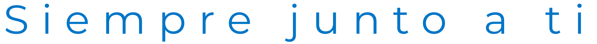

<!doctype html>
<html lang="es">
<head>
<meta charset="utf-8">
<title>Saval QMS · Mapa de audiencias y riesgos</title>
<style>
@font-face{font-family:'Mont';src:url(fonts/montserrat-latin-wght-normal.woff2) format('woff2');font-weight:100 900;font-display:block}
@font-face{font-family:'Int';src:url(fonts/inter-latin-opsz-normal.woff2) format('woff2');font-weight:100 900;font-display:block}
:root{--ink:#0A1F3D;--sub:#5A6B85;--blue:#0076C8;--cyan:#00A7E0;--deep:#0A3D91;--navy:#062A63;--mist:#EAF4FC}
*{margin:0;padding:0;box-sizing:border-box}
html,body{width:1920px;height:1080px;overflow:hidden;background:#fff}
#stage{position:relative;width:1920px;height:1080px;overflow:hidden;background:#fff;font-family:'Int',sans-serif;color:var(--ink);-webkit-font-smoothing:antialiased;font-feature-settings:'cv11','ss03'}
.scene{position:absolute;inset:0;visibility:hidden;overflow:hidden}
.abs{position:absolute}
.fill{position:absolute;inset:0}
.mont{font-family:'Mont',sans-serif}
.mask{display:inline-block;overflow:hidden;vertical-align:top;padding:.1em .06em .18em;margin:-.1em -.06em -.18em}
.w{display:inline-block;will-change:transform}
.gt{background:linear-gradient(100deg,#0A3D91 0%,#0076C8 38%,#00A7E0 78%,#47C2F0 100%);-webkit-background-clip:text;background-clip:text;color:transparent}
.gtw{background:linear-gradient(100deg,#ffffff 0%,#d6f1ff 60%,#9fe0ff 100%);-webkit-background-clip:text;background-clip:text;color:transparent}
.h1{font-family:'Mont';font-weight:600;font-size:64px;letter-spacing:-.025em;line-height:1.08}
.sub{color:var(--sub)}
.kick{font-size:20px;font-weight:700;letter-spacing:.16em;text-transform:uppercase;color:var(--blue)}
.glass{background:rgba(255,255,255,.58);-webkit-backdrop-filter:blur(26px) saturate(170%);backdrop-filter:blur(26px) saturate(170%);border:1.5px solid rgba(255,255,255,.9);box-shadow:inset 0 1px 0 rgba(255,255,255,.95),0 30px 70px -24px rgba(8,62,140,.28),0 4px 14px rgba(8,62,140,.06);border-radius:36px}
.glassd{background:rgba(255,255,255,.11);-webkit-backdrop-filter:blur(22px) saturate(150%);backdrop-filter:blur(22px) saturate(150%);border:1.5px solid rgba(255,255,255,.28);box-shadow:inset 0 1px 0 rgba(255,255,255,.35),0 30px 70px -30px rgba(0,10,40,.45);border-radius:36px;color:#fff}
.blueg{background:linear-gradient(135deg,#0A3D91 0%,#0067BE 45%,#0A8FD8 80%,#2DB2EA 100%);color:#fff;border-radius:36px;box-shadow:0 34px 70px -26px rgba(6,42,99,.55),inset 0 1px 0 rgba(255,255,255,.25)}
.pill{display:inline-flex;align-items:center;justify-content:center;height:34px;padding:0 16px;border-radius:999px;font-size:18px;font-weight:700;letter-spacing:.01em;white-space:nowrap}
.p-hi{background:linear-gradient(135deg,#0A4FA8,#0076C8);color:#fff}
.p-mh{background:#5FAFE6;color:#fff}
.p-me{background:#DCEEFB;color:#0067BE}
.p-lo{background:#fff;color:#0067BE;border:1.5px solid #9CCBEE}
.icon{width:100%;height:100%;fill:none;stroke:currentColor;stroke-width:1.7;stroke-linecap:round;stroke-linejoin:round}
.chip{position:absolute;width:74px;height:40px;border-radius:999px;display:flex;align-items:center;justify-content:center;font-family:'Mont';font-weight:700;font-size:19px;color:#0067BE;background:#fff;box-shadow:0 6px 16px -6px rgba(6,42,99,.35)}
.lbl{font-size:16px;font-weight:700;letter-spacing:.14em;text-transform:uppercase}
</style>
</head>
<body>
<div id="stage">
  <div class="fill" id="aurora"></div>
  <div id="scenes"></div>
  <div id="hudWrap"></div>
  <div class="fill" id="veil" style="background:#fff;opacity:0;pointer-events:none"></div>
</div>
<script>
'use strict';
/* ═════════════ utilidades de tiempo y easing ═════════════ */
const clamp=(x,a=0,b=1)=>Math.min(b,Math.max(a,x));
const lerp=(a,b,k)=>a+(b-a)*k;
const E={
  lin:t=>t,
  outCubic:t=>1-Math.pow(1-t,3),
  inCubic:t=>t*t*t,
  inOutCubic:t=>t<.5?4*t*t*t:1-Math.pow(-2*t+2,3)/2,
  outQuint:t=>1-Math.pow(1-t,5),
  outExpo:t=>t>=1?1:1-Math.pow(2,-10*t),
  inExpo:t=>t<=0?0:Math.pow(2,10*t-10),
  inOutExpo:t=>t<=0?0:t>=1?1:t<.5?Math.pow(2,20*t-10)/2:(2-Math.pow(2,-20*t+10))/2,
  outBack:t=>{const c1=1.5,c3=c1+1;return 1+c3*Math.pow(t-1,3)+c1*Math.pow(t-1,2)},
  inOutSine:t=>-(Math.cos(Math.PI*t)-1)/2,
};
const P=(t,a,b,e=E.outExpo)=>e(clamp((t-a)/(b-a)));
const $=id=>document.getElementById(id);
const INF=1e9;
function set(el,o={}){
  const {op=1,x=0,y=0,s=1,sx,sy,r=0,rx=0,ry=0,b=0,persp=0}=o;
  el.style.opacity=op<0.002?0:op>0.998?1:op;
  el.style.transform=`${persp?`perspective(${persp}px) `:''}translate(${x}px,${y}px) scale(${sx??s},${sy??s})${r?` rotate(${r}deg)`:''}${rx?` rotateX(${rx}deg)`:''}${ry?` rotateY(${ry}deg)`:''}`;
  el.style.filter=b>0.15?`blur(${b.toFixed(2)}px)`:'none';
}
// entrada (sube y se enfoca) y salida (sube y se desenfoca)
function fx(el,u,a,d=0.9,c=INF,cd=0.6,o={}){
  const {dy=40,dx=0,blur=14,s0=1,s1=1,oy=-30,ox=0}=o;
  const i=P(u,a,a+d,E.outExpo), q=P(u,c,c+cd,E.inCubic);
  set(el,{op:i*(1-q),x:(1-i)*dx+q*ox,y:(1-i)*dy+q*oy,s:lerp(s0,1,i)*lerp(1,s1,q),b:(1-i)*blur+q*blur});
  return i*(1-q);
}
function vis(el,on){el.style.visibility=on?'visible':'hidden'}
function h(parent,tag,cls,style,html){
  const e=document.createElement(tag);if(cls)e.className=cls;if(style)e.style.cssText=style;if(html!=null)e.innerHTML=html;
  if(parent)parent.appendChild(e);return e;
}
// palabras con máscara; *texto* = degradado
function mkWords(el,text,emCls='gt'){
  el.innerHTML='';const out=[];let em=false;
  const toks=text.split(' ');
  toks.forEach((tok,i)=>{
    let s=tok,en=false;
    if(s.startsWith('*')){em=true;s=s.slice(1)}
    if(s.endsWith('*')){en=true;s=s.slice(0,-1)}
    const m=h(el,'span','mask');const w=h(m,'span','w'+(em?' '+emCls:''));w.textContent=s;
    if(i<toks.length-1)el.appendChild(document.createTextNode(' '));
    out.push(w);if(en)em=false;
  });
  return out;
}
function mkChars(el,text,cls=''){
  el.innerHTML='';
  return [...text].map(ch=>{const m=h(el,'span','mask');const w=h(m,'span','w '+cls);w.textContent=ch===' '?' ':ch;return w});
}
function revealW(ws,u,a,st=0.06,d=1.0,c=INF,cd=0.45){
  ws.forEach((w,i)=>{
    const k=P(u,a+i*st,a+i*st+d,E.outExpo),q=P(u,c+i*st*0.35,c+i*st*0.35+cd,E.inCubic);
    w.style.transform=`translateY(${((1-k)*105-q*105).toFixed(2)}%)`;w.style.opacity=k*(1-q);
  });
}
function rng(seed){return()=>{seed|=0;seed=seed+0x6D2B79F5|0;let t=Math.imul(seed^seed>>>15,1|seed);t=t+Math.imul(t^t>>>7,61|t)^t;return((t^t>>>14)>>>0)/4294967296}}
const fmt=(v,dec=0)=>v.toFixed(dec).replace('.',',');

/* ═════════════ íconos (trazo, 24×24) ═════════════ */
const IC={
  mail:'<rect x="3" y="5.5" width="18" height="13" rx="2.2"/><path d="M3.5 7l8.5 6 8.5-6"/>',
  doc:'<path d="M6.5 3h7.5l4.5 4.5V21h-12z"/><path d="M14 3v4.5h4.5"/><path d="M9 12.5h6.5M9 16.5h6.5"/>',
  sheet:'<rect x="4" y="4" width="16" height="16" rx="2"/><path d="M4 9.5h16M4 14.5h16M10 4v16"/>',
  paper:'<path d="M7 3.5h8l3 3V20.5H7z"/><path d="M4.5 6v15.5h11"/><path d="M10 9.5h5M10 13h5M10 16.5h3"/>',
  sign:'<path d="M3 17.5c2.5-3.5 4.5-6 6-6 2 0 0 6 2 6 1.6 0 2.6-3 4-3 1.2 0 1.6 2 3 2 .8 0 1.6-.4 3-1.2"/><path d="M3 21h18"/>',
  folder:'<path d="M3 6.5h6.2l2 2.2H21V19H3z"/>',
  user:'<circle cx="12" cy="8" r="3.8"/><path d="M4.5 20.5c.9-3.9 3.8-6 7.5-6s6.6 2.1 7.5 6"/>',
  ast:'<path d="M12 4v16M5.1 8l13.8 8M18.9 8L5.1 16"/>',
  clock:'<circle cx="12" cy="12" r="8.6"/><path d="M12 7.2V12l3.2 2.2"/>',
  bell:'<path d="M6 16.5V11a6 6 0 0112 0v5.5l1.8 1.8H4.2z"/><path d="M10 20.5a2.1 2.1 0 004 0"/>',
  tablet:'<rect x="5" y="2.8" width="14" height="18.4" rx="2.4"/><path d="M10.8 18h2.4"/>',
  shield:'<path d="M12 3l7.5 2.8v5.7c0 4.7-3.2 8-7.5 9.5-4.3-1.5-7.5-4.8-7.5-9.5V5.8z"/><path d="M8.8 12.2l2.3 2.3 4.3-4.5"/>',
  key:'<circle cx="8" cy="15.5" r="4"/><path d="M10.9 12.6L20 3.5M16.2 7.3l2.8 2.8M13.8 9.7l1.9 1.9"/>',
  check:'<path d="M5 12.5l4.5 4.5L19 7.5"/>',
  arrow:'<path d="M4 12h15.5M13.5 6l6 6-6 6"/>',
};
const icon=(k)=>`<svg class="icon" viewBox="0 0 24 24">${IC[k]}</svg>`;

/* ═════════════ guion: escenas y duraciones (s) ═════════════ */
const SC=[['logo',7],['title',7],['hoy',9],['tabla',8],['qd',12.5],['metas',13],['mod',10],['tesis',16],['aud',42.5],['risk',44.5],['hab',14],['plan',8],['relato',11.5],['pasos',7.5],['outro',8]];
const T={};let acc=0;for(const [k,d] of SC){T[k]=[acc,acc+d];acc+=d}
const DURATION=acc;window.DURATION=DURATION;
const CHAPTERS=[['El proyecto',T.hoy[0],T.mod[1]],['Diagnóstico',T.tesis[0],T.tesis[1]],['Audiencias',T.aud[0],T.aud[1]],['Riesgos',T.risk[0],T.risk[1]],['Hábitos',T.hab[0],T.plan[1]],['Relato madre',T.relato[0],T.relato[1]],['Próximos pasos',T.pasos[0],T.pasos[1]]];

const SCN=$('scenes');
const scenes=[];
function scene(id,a,b,pre,post,update,style=''){
  const el=h(SCN,'div','scene',style);el.id=id;
  scenes.push({id,el,a,b,pre,post,update});
  return el;
}
const L=160; // margen izquierdo

/* ═════════════ fondo aurora (blanco con brillos azules) ═════════════ */
const AUR=[
  {c:'rgba(0,167,224,0.17)',sz:1500,x:1450,y:120,ax:160,ay:90,w:.11,p:0},
  {c:'rgba(0,118,200,0.13)',sz:1300,x:250,y:900,ax:140,ay:110,w:.09,p:2},
  {c:'rgba(120,205,250,0.22)',sz:1100,x:1100,y:980,ax:200,ay:60,w:.13,p:4},
  {c:'rgba(10,61,145,0.07)',sz:1200,x:200,y:80,ax:120,ay:100,w:.07,p:1},
].map(o=>{o.el=h($('aurora'),'div','abs',`width:${o.sz}px;height:${o.sz}px;border-radius:50%;background:radial-gradient(circle,${o.c} 0%,transparent 62%)`);return o});
function updAurora(t){
  AUR.forEach(o=>{o.el.style.transform=`translate(${o.x-o.sz/2+Math.sin(t*o.w*6.283+o.p)*o.ax}px,${o.y-o.sz/2+Math.cos(t*o.w*5.1+o.p)*o.ay}px)`});
  $('aurora').style.opacity=P(t,0,1.4,E.inOutSine)*(1-P(t,DURATION-0.6,DURATION,E.inOutSine)*0.0);
}

/* ═════════════ marca SAVAL ═════════════ */
// Trazos centrales de las dos cintas del isotipo (coordenadas del PNG de 600×470)
const RIB1='M118.5,-4 L118.5,343.5 L432,343.5 A34.5,34.5 0 0 0 432,274.5 L300,274.5 A122.75,122.75 0 0 1 300,29 L548,29';
const RIB2='M29.5,-4 L29.5,432 L432,432 A122.75,122.75 0 0 0 432,186.5 L300,186.5 A34.5,34.5 0 0 1 300,117.5 L474,117.5';
const LK={x:460,y:395,k:1000/2610};
function buildLockup(parent,id){
  const k=LK.k;
  const lk=h(parent,'div','abs',`left:${LK.x}px;top:${LK.y}px;width:1000px;height:${756*k}px;transform-origin:0 0`);
  lk.innerHTML=`
  <svg class="abs" viewBox="0 0 600 470" style="left:0;top:0;width:${600*k}px;height:${470*k}px;overflow:visible">
    <defs>
      <mask id="${id}m" maskUnits="userSpaceOnUse" x="-60" y="-60" width="720" height="590">
        <path class="mr" d="${RIB2}" fill="none" stroke="#fff" stroke-width="74" stroke-linejoin="round"/>
        <path class="mr" d="${RIB1}" fill="none" stroke="#fff" stroke-width="74" stroke-linejoin="round"/>
      </mask>
      <mask id="${id}a" maskUnits="userSpaceOnUse" x="0" y="0" width="600" height="470" style="mask-type:alpha"><image href="assets/saval-iso.png" width="600" height="470"/></mask>
      <filter id="${id}f" x="-100%" y="-100%" width="300%" height="300%"><feGaussianBlur stdDeviation="16"/></filter>
    </defs>
    <image href="assets/saval-iso.png" width="600" height="470" mask="url(#${id}m)"/>
    <g mask="url(#${id}a)">
      <path class="hl" d="${RIB2}" fill="none" stroke="#C8F2FF" stroke-width="64"/>
      <path class="hl" d="${RIB1}" fill="none" stroke="#C8F2FF" stroke-width="64"/>
    </g>
    <circle class="hd" r="30" fill="#7FDBFF" filter="url(#${id}f)"/>
    <circle class="hd" r="30" fill="#7FDBFF" filter="url(#${id}f)"/>
  </svg>
  <div class="abs wordw" style="left:${640*k}px;top:0;width:${1970*k}px;height:${470*k}px">
    
    <div class="fill shine" style="-webkit-mask-image:url(assets/saval-word.png);mask-image:url(assets/saval-word.png);-webkit-mask-size:100% 100%;mask-size:100% 100%"></div>
  </div>
  <div class="abs isosh" style="left:0;top:0;width:${600*k}px;height:${470*k}px;-webkit-mask-image:url(assets/saval-iso.png);mask-image:url(assets/saval-iso.png);-webkit-mask-size:100% 100%;mask-size:100% 100%"></div>
  <div class="abs tagw" style="left:0;top:${560*k}px;width:1000px;height:${196*k}px"></div>`;
  const mr=[...lk.querySelectorAll('.mr')],hl=[...lk.querySelectorAll('.hl')],hd=[...lk.querySelectorAll('.hd')];
  const len=mr.map(p=>p.getTotalLength());
  mr.forEach((p,i)=>{p.style.strokeDasharray=len[i]+' '+len[i]});
  hl.forEach((p,i)=>{p.style.strokeDasharray=`170 ${len[i]+400}`});
  const word=lk.querySelector('.wordw'),tag=lk.querySelector('.tagw'),shines=[lk.querySelector('.shine'),lk.querySelector('.isosh')];
  return{
    lk,word,tag,
    draw(ks){ // ks = [k cinta exterior, k cinta interior]
      ks.forEach((k,i)=>{
        mr[i].style.strokeDashoffset=len[i]*(1-k);
        hl[i].style.strokeDashoffset=-(len[i]*k-170);
        hl[i].style.opacity=k>0&&k<1?Math.sin(Math.PI*k)**0.5:0;
        const pt=mr[i].getPointAtLength(len[i]*clamp(k));
        hd[i].setAttribute('cx',pt.x);hd[i].setAttribute('cy',pt.y);
        hd[i].style.opacity=k>0&&k<1?0.85*Math.sin(Math.PI*k):0;
      });
    },
    shine(k){ // barrido de brillo, k 0..1
      const pos=lerp(-60,160,k);
      shines.forEach(s=>{s.style.background=`linear-gradient(105deg,transparent ${pos-18}%,rgba(255,255,255,.85) ${pos}%,transparent ${pos+18}%)`;s.style.opacity=k>0&&k<1?1:0});
    }
  };
}

/* ═════════════ HUD (cabecera persistente) ═════════════ */
function buildHud(white){
  const w=h($('hudWrap'),'div','fill',`pointer-events:none;${white?'filter:brightness(0) invert(1);':''}`);
  const left=h(w,'div','abs','left:80px;top:48px;height:44px;display:flex;align-items:center;gap:22px');
  const iso=h(left,'img','','height:44px;display:block');iso.src='assets/saval-iso.png';
  const txt=h(left,'div','',`display:flex;align-items:center;gap:22px`);
  h(txt,'div','','width:1.5px;height:30px;background:rgba(10,31,61,.2)');
  h(txt,'div','','font-size:19px;font-weight:600;color:#0076C8;white-space:nowrap','Mapa de audiencias y riesgos<span style="color:#5A6B85;font-weight:500"> · Proyecto QMS</span>');
  const right=h(w,'div','abs','right:80px;top:48px;height:44px;display:flex;align-items:center;gap:20px');
  const lab=h(right,'div','','position:relative;width:260px;height:30px;overflow:hidden');
  const labs=CHAPTERS.map(([n],i)=>h(lab,'div','abs',`right:0;top:0;font-size:19px;font-weight:600;color:#0A1F3D;white-space:nowrap`,`<span style="color:#0076C8;font-family:Mont;font-weight:700;margin-right:10px">${String(i+1).padStart(2,'0')}</span>${n}`));
  const dash=h(right,'div','','display:flex;gap:6px');
  const ds=CHAPTERS.map(()=>h(dash,'div','','width:26px;height:4px;border-radius:2px;background:rgba(10,31,61,.14);overflow:hidden'));
  const fills=ds.map(d=>h(d,'div','','height:100%;width:0;background:linear-gradient(90deg,#0A3D91,#00A7E0)'));
  return{w,iso,txt,right,labs,fills};
}
const HUDS=[buildHud(false),buildHud(true)];
function updHud(t){
  const dark=Math.max(
    P(t,T.tesis[0]-0.6,T.tesis[0]+0.2,E.inOutSine)*(1-P(t,T.tesis[1]-0.2,T.tesis[1]+0.8,E.inOutSine)),
    P(t,T.relato[0]-0.4,T.relato[0]+0.4,E.inOutSine)*(1-P(t,T.relato[1]+0.2,T.relato[1]+0.9,E.inOutSine)));
  const on=t>=T.logo[1]&&t<T.outro[0]-0.6;
  const txtOp=P(t,T.title[1]-0.4,T.title[1]+0.6)*(1-P(t,T.outro[0]-1.4,T.outro[0]-0.7,E.inCubic));
  const rOp=P(t,T.hoy[0],T.hoy[0]+1)*(1-P(t,T.outro[0]-1.4,T.outro[0]-0.7,E.inCubic));
  // capítulo actual
  let ci=-1;CHAPTERS.forEach(([n,a,b],i)=>{if(t>=a-0.3)ci=i});
  HUDS.forEach((H,hi)=>{
    vis(H.w,on);H.w.style.opacity=hi?dark:1-dark;
    set(H.txt,{op:txtOp,x:(1-txtOp)*-16});
    set(H.right,{op:rOp});
    H.labs.forEach((l,i)=>{
      const a=CHAPTERS[i][1]-0.3,b=i<CHAPTERS.length-1?CHAPTERS[i+1][1]-0.3:INF;
      const k=P(t,a,a+0.7),q=P(t,b,b+0.5,E.inCubic);
      set(l,{op:k*(1-q),y:(1-k)*24-q*24});
    });
    H.fills.forEach((f,i)=>{const [n,a,b]=CHAPTERS[i];f.style.width=(clamp((t-a)/(b-a))*100)+'%'});
  });
}

/* ═══════════════════════════ 1 · LOGO ═══════════════════════════ */
const S1=scene('logo',...T.logo,0,0,u=>{
  M1.draw([P(u,0.3,2.5,E.inOutCubic),P(u,0.6,2.8,E.inOutCubic)]);
  const kw=P(u,2.0,3.4,E.outExpo);
  M1.word.style.clipPath=`inset(-5% ${((1-kw)*100).toFixed(2)}% -5% -5%)`;
  const q=P(u,5.6,6.2,E.inCubic);
  set(M1.word,{op:Math.min(1,kw*1.4)*(1-q),x:(1-kw)*-50,b:(1-kw)*8});
  const kt=P(u,3.0,4.3,E.outExpo);
  set(M1.tag,{op:kt*(1-q),sx:lerp(1.1,1,kt),sy:1,b:(1-kt)*10,y:(1-kt)*12});
  M1.tag.style.transformOrigin='50% 50%';
  M1.shine(P(u,4.2,5.4,E.inOutSine));
  const km=P(u,5.7,7.0,E.inOutCubic),s=lerp(1,44/(470*LK.k),km);
  M1.lk.style.transform=`translate(${lerp(0,80-LK.x,km)}px,${lerp(0,48-LK.y,km)}px) scale(${s})`;
  // halo
  const g=P(u,0.2,2.6,E.outCubic)*(1-P(u,4.6,6.4,E.inOutSine));
  set($('lgGlow'),{op:g*0.9,s:lerp(0.7,1.05,P(u,0,6,E.outCubic))});
});
h(S1,'div','abs',`left:410px;top:90px;width:1100px;height:900px;border-radius:50%;background:radial-gradient(ellipse,rgba(0,167,224,.22) 0%,rgba(0,118,200,.08) 38%,transparent 66%)`).id='lgGlow';
const M1=buildLockup(S1,'m1');

/* ═══════════════════════════ 2 · TÍTULO ═══════════════════════════ */
const S2=scene('title',...T.title,1.0,0.3,u=>{
  const q=P(u,6.2,7.1,E.inCubic);
  // orbe
  const ko=P(u,-0.7,1.4,E.outExpo);
  set($('orb'),{op:ko*(1-q),s:lerp(0.55,1,ko)*lerp(1,1.9,q),y:Math.sin((u+7)*0.7)*12,b:(1-ko)*20+q*16});
  $('orbSheen').style.transform=`rotate(${(u+7)*14}deg)`;
  set($('lens'),{op:P(u,0.4,1.6)*(1-q),x:Math.sin((u+7)*0.5)*30-(1-P(u,0.4,1.8))*80,y:Math.cos((u+7)*0.45)*20});
  fx($('tKick'),u,-0.2,0.9,6.0,0.6);
  T2.forEach((ws,i)=>revealW(ws,u,0.0+i*0.28,0.028,1.1,6.0+i*0.08,0.5));
  $('tRule').style.width=(P(u,1.2,2.4,E.inOutCubic)*760)+'px';
  $('tRule').style.opacity=1-q;
  fx($('tGlass'),u,1.6,1.0,6.0,0.6,{dy:30});
});
S2.innerHTML=`
<div class="abs" id="orb" style="left:1080px;top:200px;width:660px;height:660px">
  <div class="fill" style="border-radius:50%;background:radial-gradient(circle at 34% 28%,#F2FBFF 0%,#A9E3FA 14%,#3DB4EC 34%,#0A86D4 54%,#0A4FA8 78%,#062A63 100%);box-shadow:0 60px 120px -30px rgba(6,42,99,.45)"></div>
  <div class="fill" id="orbSheen" style="border-radius:50%;background:conic-gradient(from 0deg,rgba(255,255,255,0) 0deg,rgba(255,255,255,.28) 60deg,rgba(255,255,255,0) 140deg,rgba(0,167,224,.25) 220deg,rgba(255,255,255,0) 300deg);mix-blend-mode:soft-light"></div>
  <div class="fill" style="border-radius:50%;background:radial-gradient(circle at 30% 22%,rgba(255,255,255,.75) 0%,rgba(255,255,255,0) 22%)"></div>
</div>
<div class="abs" id="lens" style="left:1000px;top:540px;width:360px;height:360px;border-radius:50%;background:rgba(255,255,255,.16);-webkit-backdrop-filter:blur(18px) saturate(160%);backdrop-filter:blur(18px) saturate(160%);border:1.5px solid rgba(255,255,255,.75);box-shadow:inset 0 2px 0 rgba(255,255,255,.8),0 30px 60px -20px rgba(6,42,99,.35)"></div>
<div class="abs kick" id="tKick" style="left:${L}px;top:262px">Proyecto QMS / DMS de SoftExpert EQM</div>
<div class="abs mont" id="tL1" style="left:${L-6}px;top:300px;font-size:124px;font-weight:300;letter-spacing:-.01em;line-height:1.06;white-space:nowrap"></div>
<div class="abs mont" id="tL2" style="left:${L-6}px;top:432px;font-size:124px;font-weight:300;letter-spacing:-.01em;line-height:1.06;white-space:nowrap"></div>
<div class="abs mont" id="tL3" style="left:${L-6}px;top:564px;font-size:124px;font-weight:700;letter-spacing:-.015em;line-height:1.06;white-space:nowrap"></div>
<div class="abs" id="tRule" style="left:${L}px;top:730px;height:3px;border-radius:2px;background:linear-gradient(90deg,#0A3D91,#00A7E0 70%,rgba(0,167,224,0))"></div>
<div class="abs glass" id="tGlass" style="left:${L}px;top:770px;width:860px;padding:28px 36px;border-radius:28px">
  <div style="font-size:28px;font-weight:600;letter-spacing:-.01em">Primer entregable del plan de gestión del cambio</div>
  <div class="sub" style="font-size:22px;margin-top:8px;line-height:1.4">Basado en el kickoff de agosto y en entrevistas a sponsors, key users y equipo de proyecto · Octubre 2026</div>
</div>`;
const T2=[mkChars($('tL1'),'MAPA DE'),mkChars($('tL2'),'AUDIENCIAS'),mkChars($('tL3'),'Y RIESGOS','gt')];

/* ═══════════════════════════ 3 · HOY ═══════════════════════════ */
const CARDS=[
  ['mail','Correo',250,210,1.0,-8],['doc','Word',1650,240,1.08,6],['sheet','Excel',1520,820,0.96,-5],['paper','Papel',330,840,1.04,7],
  ['sign','Firma',1000,150,0.7,-3],['folder','Carpeta',1790,580,0.74,9],['mail','RE: RV: Desvío',140,520,0.66,4],['doc','Word',760,935,0.68,-6],
  ['sheet','Excel',1290,120,0.6,4],['paper','Papel',1180,960,0.6,-4],['sign','Firma',600,130,0.58,8],
];
const S3=scene('hoy',...T.hoy,0.4,0.2,u=>{
  const rec=P(u,4.3,5.3,E.inOutCubic),cv=P(u,8.2,9.0,E.inExpo);
  CARDS.forEach((c,i)=>{
    const [ic,lb,x,y,z,r]=c,el=CEL[i];
    const k=P(u,0.05+i*0.07,1.5+i*0.07,E.outExpo);
    const dx=Math.sin(u*0.45+i*1.7)*22*z,dy=Math.cos(u*0.38+i*1.3)*16*z;
    const zz=z*lerp(0.55,1,k)*lerp(1,0.86,rec);
    const px=lerp(x+dx,960,cv),py=lerp(y+dy+(1-k)*60,560,cv);
    set(el,{op:k*lerp(1,0.32,rec)*(1-cv),x:px-110,y:py-70,s:zz*lerp(1,0.2,cv),r:r+Math.sin(u*0.5+i)*2,b:(z<0.75?2.5:0)+(1-k)*8});
  });
  revealW(H3a,u,0.25,0.06,1.0,4.2,0.45);
  revealW(H3b,u,0.6,0.07,1.0,4.25,0.45);
  // 40 firmas
  const n=Math.round(clamp((u-5.2)/1.8)*40);
  $('n40').textContent=Math.max(1,n);
  fx($('b40'),u,4.9,1.0,8.2,0.6,{dx:-40,dy:0,ox:0,oy:0,s1:0.6});
  PAGES.forEach((p,i)=>{
    const a=5.2+i*0.045,k=P(u,a,a+0.5,E.outBack);
    const px=lerp(0,960-(1150+(i%8)*78+32),cv),py=lerp(0,560-(330+Math.floor(i/8)*98+42),cv);
    set(p.el,{op:P(u,a,a+0.2)*(1-cv),s:lerp(0.4,1,k)*lerp(1,0.2,cv),x:px,y:py});
    p.sig.style.strokeDashoffset=60*(1-P(u,a+0.12,a+0.55,E.inOutCubic));
  });
  fx($('mailLine'),u,6.6,0.9,8.1,0.5,{dy:20});
});
const CEL=CARDS.map(([ic,lb])=>{
  const e=h(S3,'div','abs glass',`left:0;top:0;width:220px;height:140px;padding:20px 22px;border-radius:24px;background:rgba(255,255,255,.82)`);
  e.innerHTML=`<div style="display:flex;align-items:center;gap:14px"><div style="width:46px;height:46px;border-radius:13px;background:#EAF4FC;color:#0076C8;padding:9px">${icon(ic)}</div><div style="font-size:20px;font-weight:600;white-space:nowrap">${lb}</div></div>
  <div style="margin-top:18px;height:8px;width:150px;border-radius:4px;background:#E6EDF5"></div><div style="margin-top:10px;height:8px;width:100px;border-radius:4px;background:#EEF2F7"></div>`;
  return e;
});
h(S3,'div','abs mont','left:0;width:1920px;top:430px;text-align:center;font-size:58px;font-weight:500;letter-spacing:-.02em').id='h3a';
h(S3,'div','abs mont','left:0;width:1920px;top:510px;text-align:center;font-size:92px;font-weight:700;letter-spacing:-.035em').id='h3b';
const H3a=mkWords($('h3a'),'Hoy, la calidad se gestiona con');
const H3b=mkWords($('h3b'),'*papel, correo, Word y Excel.*');
h(S3,'div','abs','',`
  <div style="display:flex;align-items:flex-end;gap:26px"><div id="n40" class="mont gt" style="font-size:300px;font-weight:200;line-height:.82;letter-spacing:-.05em;font-variant-numeric:tabular-nums;width:390px">40</div>
  <div class="mont" style="font-size:54px;font-weight:600;letter-spacing:-.025em;line-height:1.1;padding-bottom:6px">firmas y 40 fechas<br>por persona</div></div>
  <div style="font-size:30px;font-weight:500;margin-top:34px;color:#5A6B85">en un solo documento de 40 páginas.</div>`).id='b40';
$('b40').style.cssText=`left:${L}px;top:330px`;
h(S3,'div','abs','',`<div style="width:44px;height:44px;border-radius:12px;background:#EAF4FC;color:#0076C8;padding:9px;flex:none">${icon('mail')}</div><div style="font-size:26px;line-height:1.4;color:#0A1F3D">Y las investigaciones de desvíos van y vuelven<br>por correo, en un Word que completan varias personas.</div>`).id='mailLine';
$('mailLine').style.cssText=`left:${L}px;top:720px;display:flex;gap:18px;align-items:flex-start;width:820px`;
const PAGES=[];
for(let i=0;i<40;i++){
  const x=1150+(i%8)*78,y=330+Math.floor(i/8)*98;
  const el=h(S3,'div','abs',`left:${x}px;top:${y}px;width:64px;height:84px;border-radius:8px;background:#fff;box-shadow:0 8px 18px -8px rgba(6,42,99,.35),0 0 0 1px rgba(10,60,140,.07)`);
  el.innerHTML=`<div style="position:absolute;left:10px;top:12px;width:40px;height:4px;border-radius:2px;background:#E2EAF3"></div><div style="position:absolute;left:10px;top:22px;width:30px;height:4px;border-radius:2px;background:#E2EAF3"></div><div style="position:absolute;left:10px;top:32px;width:36px;height:4px;border-radius:2px;background:#E2EAF3"></div>
  <svg style="position:absolute;left:8px;top:46px;width:48px;height:28px;overflow:visible" viewBox="0 0 48 28"><path d="M2 20c5-9 9-14 12-14 3.5 0 0 13 4 13 3 0 4.5-7 7.5-7 2.4 0 2.5 4.5 5.5 4.5 2 0 4-1.5 7-4" fill="none" stroke="#0076C8" stroke-width="2.2" stroke-linecap="round" stroke-dasharray="60" stroke-dashoffset="60"/><path d="M2 25h44" stroke="#C9D7E6" stroke-width="1.2"/></svg>`;
  PAGES.push({el,sig:el.querySelector('path')});
}

/* ═══════════════════════════ 4 · HOY → QMS/DMS ═══════════════════════════ */
const ROWS4=[['Correo, Word y Excel','Flujo centralizado en una sola plataforma, con responsables y plazos'],['Firmas en papel, página por página','Firma electrónica y distribución en línea'],['Seguimiento manual de compromisos','Control automatizado con alertas por vencimiento e indicadores'],['Información repartida en correos y carpetas','Todo el historial en un mismo lugar']];
const S4=scene('tabla',...T.tabla,0.6,0.4,u=>{
  revealW(H4,u,0.0,0.05,1.0,7.4,0.4);
  fx($('s4sub'),u,0.5,0.9,7.4,0.5,{dy:20});
  const kp=P(u,-0.5,0.7,E.outExpo),q=P(u,7.5,8.3,E.inCubic);
  set($('p4'),{op:kp*(1-q),s:lerp(0.25,1,kp)*lerp(1,0.94,q),b:(1-kp)*16+q*10,y:q*-20});
  $('p4hd').style.opacity=P(u,0.5,1.2);
  R4.forEach((r,i)=>{
    const a=1.0+i*0.75;
    fx(r.l,u,a,0.8,INF,0,{dy:16,blur:8});
    r.ln.style.strokeDashoffset=130*(1-P(u,a+0.25,a+0.8,E.inOutCubic));
    r.ah.style.opacity=P(u,a+0.6,a+0.8);
    fx(r.r,u,a+0.5,0.8,INF,0,{dx:-24,dy:0,blur:8});
    r.ic.style.transform=`scale(${P(u,a+0.6,a+1.1,E.outBack)})`;
  });
});
h(S4,'div','abs mont h1','left:0;width:1920px;top:146px;text-align:center').id='h4';
const H4=mkWords($('h4'),'SoftExpert EQM reemplaza *todo ese circuito.*');
h(S4,'div','abs sub','left:0;width:1920px;top:236px;text-align:center;font-size:28px;font-weight:500','El mismo sistema que SAVAL Costa Rica usa hace años.').id='s4sub';
h(S4,'div','abs glass','left:210px;top:330px;width:1500px;height:590px;padding:44px 64px').id='p4';
$('p4').innerHTML=`<div id="p4hd" style="display:flex;font-size:17px;font-weight:700;letter-spacing:.14em;text-transform:uppercase;color:#5A6B85;padding-bottom:20px;border-bottom:1.5px solid rgba(10,60,140,.1)"><div style="width:600px">Hoy</div><div style="color:#0076C8">Con QMS / DMS</div></div>`;
const R4=ROWS4.map(([a,b],i)=>{
  const row=h($('p4'),'div','',`display:flex;align-items:center;height:118px;${i<3?'border-bottom:1.5px solid rgba(10,60,140,.07)':''}`);
  const l=h(row,'div','',`width:440px;font-size:27px;color:#5A6B85;font-weight:500;line-height:1.3`,a);
  const arr=h(row,'div','','width:160px;height:30px;position:relative');
  arr.innerHTML=`<svg width="150" height="30" style="overflow:visible"><path d="M8 15 H128" stroke="#0076C8" stroke-width="2.5" stroke-linecap="round" stroke-dasharray="130" stroke-dashoffset="130"/><path class="ah" d="M118 7 L130 15 L118 23" fill="none" stroke="#0076C8" stroke-width="2.5" stroke-linecap="round" stroke-linejoin="round" opacity="0"/></svg>`;
  const r=h(row,'div','','display:flex;align-items:center;gap:20px');
  const ic=h(r,'div','','width:40px;height:40px;border-radius:50%;flex:none;background:linear-gradient(135deg,#0A4FA8,#00A7E0);color:#fff;padding:9px;transform:scale(0)',icon('check'));
  h(r,'div','','font-size:29px;font-weight:600;color:#0A1F3D;line-height:1.3;width:640px;letter-spacing:-.01em',b);
  return{l,ln:arr.querySelector('path'),ah:arr.querySelector('.ah'),r,ic};
});

/* ═══════════════════════════ 5 · QMS y DMS ═══════════════════════════ */
const S5=scene('qd',...T.qd,0.5,0.3,u=>{
  revealW(H5,u,0.0,0.06,1.0,12.0,0.4);
  fx($('qdTot'),u,0.6,1.0,12.0,0.5,{dy:20});
  {const n=Math.round(P(u,0.7,2.4,E.outCubic)*1000);$('qdTotN').textContent='≈'+(n>=1000?'1.000':n);}
  [['cQ',-0.2,-1],['cD',0.05,1]].forEach(([id,a,sd])=>{
    const k=P(u,a,a+1.3,E.outExpo),q=P(u,12.0,12.7,E.inCubic);
    set($(id),{op:k*(1-q),y:(1-k)*90-q*40,s:lerp(0.92,1,k),b:(1-k)*12+q*10,persp:2000,ry:(1-k)*sd*-14});
  });
  BLK5.forEach((b,i)=>fx(b,u,1.0+(i%3)*0.5+(i>=3?0.25:0),0.9,INF,0,{dy:20,blur:8}));
  const kq=P(u,1.5,3.2,E.outCubic);
  $('nQ').textContent='~'+Math.round(kq*700);
  $('nD').textContent=Math.round(kq*300)+'+';
  // brillo sobre la tarjeta QMS
  const ks=P(u,3.6,5.0,E.inOutSine);
  $('cQsh').style.background=`linear-gradient(110deg,transparent ${lerp(-40,140,ks)-16}%,rgba(255,255,255,.22) ${lerp(-40,140,ks)}%,transparent ${lerp(-40,140,ks)+16}%)`;
});
h(S5,'div','abs mont h1',`left:${L}px;top:146px`).id='h5';
const H5=mkWords($('h5'),'Dos sistemas, *dos públicos.*');
h(S5,'div','abs',`right:${L}px;top:156px;display:flex;align-items:baseline;gap:14px`,`<span class="mont gt" id="qdTotN" style="font-size:56px;font-weight:300;letter-spacing:-.03em">1.000</span><span style="font-size:22px;font-weight:500;color:#5A6B85">usuarios finales estimados</span>`).id='qdTot';
function qdCard(id,cls,name,sub,nId,ncap,blocks,dark){
  const c=h(S5,'div','abs '+cls,`left:${id==='cQ'?L:980}px;top:290px;width:780px;height:640px;padding:48px 52px;overflow:hidden`);c.id=id;
  const col=dark?'rgba(255,255,255,.72)':'#0076C8',txt=dark?'#fff':'#0A1F3D';
  c.innerHTML=`${dark?'<div id="cQsh" class="fill" style="border-radius:36px"></div>':''}
  <div style="display:flex;justify-content:space-between;align-items:flex-start">
    <div><div class="mont" style="font-size:92px;font-weight:700;letter-spacing:-.03em;line-height:.95;color:${dark?'#fff':'#0076C8'}">${name}</div><div style="font-size:28px;font-weight:600;margin-top:10px;color:${txt}">${sub}</div></div>
    <div style="text-align:right"><div id="${nId}" class="mont ${dark?'':'gt'}" style="font-size:66px;font-weight:300;letter-spacing:-.03em;line-height:1;font-variant-numeric:tabular-nums;color:${dark?'#fff':''}">0</div><div style="font-size:19px;font-weight:500;margin-top:6px;color:${dark?'rgba(255,255,255,.8)':'#5A6B85'}">${ncap}</div></div>
  </div>
  <div style="height:1.5px;background:${dark?'rgba(255,255,255,.22)':'rgba(10,60,140,.1)'};margin:30px 0 8px"></div>`;
  return blocks.map(([lb,tx])=>h(c,'div','',`margin-top:22px`,`<div class="lbl" style="color:${col};font-size:15px">${lb}</div><div style="font-size:25px;line-height:1.38;margin-top:6px;color:${txt};font-weight:${dark?500:500}">${tx}</div>`));
}
const BLK5=[
  ...qdCard('cQ','blueg','QMS','Gestión de calidad','nQ','con usuario nombrado',[['Qué hace','Digitaliza desviaciones, CAPA, control de cambios, auditorías y reclamos. Notifica, recuerda plazos y escala.'],['A quién llega','Jefaturas, aprobadores y usuarios de proceso, cada uno con usuario nombrado.'],['Cómo cambia el trabajo','De forma individual: cada persona responde por su etapa. Es el cambio más intenso.']],true),
  ...qdCard('cD','glass','DMS','Gestión documental','nD','personas en producción',[['Qué hace','Pone a disposición los documentos vigentes y aprobados en tablet o computador.'],['A quién llega','Operarios y analistas del área productiva, en puntos de uso compartidos.'],['Cómo cambia el trabajo','Por área: se pasa del papel a la pantalla y la toma de conocimiento queda registrada.']],false),
];

/* ═══════════════════════════ 6 · METAS ═══════════════════════════ */
const MET=[[50,'%','menos etapas en los procesos de desvíos y controles de cambio'],[42,'%','menos etapas dedicadas a la gestión de documentos'],[25,'%','de ahorro en hojas de Aseguramiento de Calidad'],[15,'%','de ahorro en suministros de impresión de Aseguramiento de Calidad'],[32,'','puntos físicos de documentación menos en la planta principal']];
const S6=scene('metas',...T.metas,0.4,0.3,u=>{
  revealW(H6,u,0.0,0.06,1.0,12.4,0.4);
  const q=P(u,12.4,13.1,E.inCubic);
  const kh=P(u,0.1,1.3,E.outExpo);
  set($('hero6'),{op:kh*(1-q),y:(1-kh)*80-q*30,s:lerp(0.94,1,kh),b:(1-kh)*12+q*10});
  $('n22').textContent=Math.round(P(u,0.5,2.4,E.outCubic)*22)+'%';
  fx($('h6a'),u,1.0,0.9,INF,0,{dy:20,blur:8});
  fx($('h6b'),u,2.1,0.9,INF,0,{dy:20,blur:8});
  BAR6.forEach((b,i)=>{
    const k=P(u,2.4+i*0.3,3.6+i*0.3,E.outExpo);
    b.bar.style.width=(k*b.v/22*100)+'%';b.row.style.opacity=P(u,2.3+i*0.3,2.8+i*0.3);
    b.val.textContent=fmt(k*b.v,b.v%1?1:0)+'%';
  });
  ROW6.forEach((r,i)=>{
    const a=3.0+i*0.55;
    fx(r.el,u,a,1.0,12.3+i*0.05,0.5,{dx:60,dy:0,blur:10,ox:-40,oy:0});
    r.n.textContent=Math.round(P(u,a,a+1.6,E.outCubic)*MET[i][0])+MET[i][1];
    r.ln.style.transform=`scaleX(${P(u,a+0.2,a+1.2,E.inOutCubic)})`;
  });
});
h(S6,'div','abs mont h1',`left:${L}px;top:146px`).id='h6';
const H6=mkWords($('h6'),'Metas del *caso de negocio*');
h(S6,'div','abs blueg',`left:${L}px;top:282px;width:720px;height:660px;padding:52px 56px;overflow:hidden`,`
  <div class="abs" style="right:-160px;top:-160px;width:520px;height:520px;border-radius:50%;background:radial-gradient(circle,rgba(127,219,255,.45),transparent 65%)"></div>
  <div class="lbl" style="color:rgba(255,255,255,.75)">Meta principal</div>
  <div id="n22" class="mont" style="font-size:210px;font-weight:200;letter-spacing:-.05em;line-height:1;margin-top:10px;font-variant-numeric:tabular-nums">22%</div>
  <div id="h6a" class="mont" style="font-size:40px;font-weight:600;letter-spacing:-.02em;line-height:1.15;margin-top:4px">menos desvíos de proceso<br>en planta</div>
  <div id="h6b" style="font-size:22px;color:rgba(255,255,255,.85);margin-top:16px">Meta mensual bajo 2,5% (hoy 3,2%) · captura gradual</div>
  <div id="bars6" style="margin-top:30px"></div>`).id='hero6';
const BAR6=[['Año 0',11],['Año 1',18.7],['Año 3',22]].map(([lb,v])=>{
  const row=h($('bars6'),'div','','display:flex;align-items:center;gap:18px;margin-top:14px');
  h(row,'div','','width:84px;font-size:20px;font-weight:600;color:rgba(255,255,255,.85)',lb);
  const tr=h(row,'div','','flex:1;height:14px;border-radius:7px;background:rgba(255,255,255,.16);overflow:hidden');
  const bar=h(tr,'div','','height:100%;width:0;border-radius:7px;background:linear-gradient(90deg,#9FE3FF,#ffffff)');
  const val=h(row,'div','mont','width:90px;text-align:right;font-size:24px;font-weight:600','0%');
  return{row,bar,val,v};
});
const ROW6=MET.map(([v,s,d],i)=>{
  const el=h(S6,'div','abs',`left:960px;top:${290+i*130}px;width:800px;height:130px;display:flex;align-items:center;gap:30px`);
  const n=h(el,'div','mont gt','width:220px;font-size:80px;font-weight:300;letter-spacing:-.04em;font-variant-numeric:tabular-nums;flex:none','0');
  h(el,'div','','font-size:27px;line-height:1.3;font-weight:500;color:#0A1F3D',d);
  const ln=h(el,'div','abs','left:0;bottom:0;width:800px;height:1.5px;background:rgba(10,60,140,.1);transform-origin:0 0');
  return{el,n,ln};
});

/* ═══════════════════════════ 7 · MÓDULOS ═══════════════════════════ */
const STEPS=[['Presentación','El implementador presenta el módulo y las definiciones.'],['Configuración conjunta','Sesiones de trabajo con el equipo SAVAL.'],['Revisión y ajustes','Sesiones fijas los martes y jueves.'],['Validación GAMP 5','Protocolos OQ/PQ y pruebas con usuarios.'],['Capacitación y uso','Formación por perfil y acta de aceptación.']];
const NX=i=>250+i*355,NY=540;
const S7=scene('mod',...T.mod,0.4,0.6,u=>{
  revealW(H7,u,0.0,0.06,1.0,8.6,0.4);
  fx($('s7sub'),u,0.5,0.9,8.6,0.5,{dy:20});
  const qa=P(u,8.7,9.4,E.inCubic);
  $('trk').style.transform=`scaleX(${P(u,0.6,1.5,E.inOutCubic)})`;$('trk').style.opacity=1-qa;
  const kp=P(u,1.2,5.6,E.inOutSine);
  $('prog').style.width=(kp*(NX(4)-NX(0)))+'px';$('prog').style.opacity=1-qa;
  set($('phead'),{op:(kp>0&&kp<1?1:0)*(1-qa),x:NX(0)+kp*(NX(4)-NX(0))-14,y:NY-14});
  ND7.forEach((n,i)=>{
    const reach=1.2+i*1.1,kn=P(u,reach-0.15,reach+0.35,E.outBack),k0=P(u,0.8+i*0.1,1.6+i*0.1);
    const last=i===4,grow=last?P(u,8.6,9.8,E.inOutCubic):0;
    set(n.el,{op:k0*(last?1:1-qa),s:lerp(0.6,1,k0)*lerp(1,1.12,P(u,reach-0.15,reach+0.2)-P(u,reach+0.2,reach+0.7))*(1+grow*0.4)});
    n.fill.style.opacity=P(u,reach-0.1,reach+0.25);
    n.ring.style.opacity=(1-P(u,reach,reach+1.2))*P(u,reach,reach+0.1);
    n.ring.style.transform=`scale(${1+P(u,reach,reach+1.2,E.outCubic)*1.2})`;
    fx(n.lb,u,reach,0.9,8.7,0.5,{dy:24,blur:8});
  });
  fx($('call7'),u,6.0,1.0,8.7,0.5,{dy:30});
});
h(S7,'div','abs mont h1',`left:${L}px;top:146px`).id='h7';
const H7=mkWords($('h7'),'Cómo entra en uso *cada módulo*');
h(S7,'div','abs sub',`left:${L}px;top:236px;font-size:28px;font-weight:500`,'Cada proceso entra en uso apenas está construido y validado.').id='s7sub';
h(S7,'div','abs',`left:${NX(0)}px;top:${NY-2}px;width:${NX(4)-NX(0)}px;height:4px;border-radius:2px;background:rgba(10,60,140,.1);transform-origin:0 50%`).id='trk';
h(S7,'div','abs',`left:${NX(0)}px;top:${NY-2}px;width:0;height:4px;border-radius:2px;background:linear-gradient(90deg,#0A3D91,#0076C8,#00A7E0)`).id='prog';
h(S7,'div','abs',`left:0;top:0;width:28px;height:28px;border-radius:50%;background:#fff;box-shadow:0 0 0 6px rgba(0,167,224,.25),0 0 30px 8px rgba(0,167,224,.6)`).id='phead';
const ND7=STEPS.map(([t,d],i)=>{
  const el=h(S7,'div','abs',`left:${NX(i)-36}px;top:${NY-36}px;width:72px;height:72px`);
  const ring=h(el,'div','fill','border-radius:50%;border:2px solid #00A7E0');
  h(el,'div','fill glass','border-radius:50%;background:rgba(255,255,255,.9)');
  const fill=h(el,'div','fill','border-radius:50%;background:linear-gradient(135deg,#0A3D91,#0076C8 55%,#00A7E0);opacity:0;box-shadow:0 14px 30px -10px rgba(0,90,180,.6)');
  h(el,'div','fill mont',`display:flex;align-items:center;justify-content:center;font-size:26px;font-weight:700;color:#0076C8`,`${i+1}`);
  h(fill,'div','fill mont','display:flex;align-items:center;justify-content:center;font-size:26px;font-weight:700;color:#fff',`${i+1}`);
  const lb=h(S7,'div','abs',`left:${NX(i)-160}px;top:${NY+66}px;width:320px;text-align:center`,`<div style="font-size:28px;font-weight:700;letter-spacing:-.01em">${t}</div><div class="sub" style="font-size:22px;line-height:1.4;margin-top:10px">${d}</div>`);
  return{el,fill,ring,lb};
});
h(S7,'div','abs glass',`left:410px;top:840px;width:1100px;padding:26px 36px;border-radius:26px;display:flex;align-items:center;gap:22px`,`<div style="width:54px;height:54px;flex:none;border-radius:16px;background:linear-gradient(135deg,#0A3D91,#00A7E0);color:#fff;padding:11px">${icon('shield')}</div><div style="font-size:27px;font-weight:600;line-height:1.35;letter-spacing:-.01em">Ningún proceso entra en uso sin estar validado y con su acta de aceptación firmada.</div>`).id='call7';

/* ═══════════════════════════ 8 · TESIS (fondo azul) ═══════════════════════════ */
const BLUEBG=`background:linear-gradient(125deg,#062A63 0%,#0A3D91 30%,#0070C4 64%,#08A2E0 100%);color:#fff`;
function blueLights(el){
  return [0,1,2].map(i=>h(el,'div','abs',`width:${[1100,900,800][i]}px;height:${[1100,900,800][i]}px;border-radius:50%;background:radial-gradient(circle,${['rgba(127,219,255,.30)','rgba(255,255,255,.14)','rgba(0,167,224,.35)'][i]} 0%,transparent 64%)`));
}
function updLights(ls,t){
  const B=[[1500,150],[300,850],[1100,900]];
  ls.forEach((l,i)=>{const sz=[1100,900,800][i];l.style.transform=`translate(${B[i][0]-sz/2+Math.sin(t*0.3+i*2)*160}px,${B[i][1]-sz/2+Math.cos(t*0.25+i)*90}px)`});
}
const S8=scene('tesis',...T.tesis,1.2,1.0,(u,t)=>{
  // revelado circular desde el último nodo y cierre hacia el centro
  const ko=P(u,-1.2,0.3,E.inOutCubic),kc=P(u,15.2,16.9,E.inOutExpo);
  const r=kc>0?lerp(2300,0,kc):lerp(36*1.4,2300,ko);
  const cx=kc>0?960:NX(4),cy=kc>0?540:NY;
  S8.style.clipPath=`circle(${r.toFixed(1)}px at ${cx}px ${cy}px)`;
  updLights(L8,t);
  const qa=P(u,5.0,5.9,E.inOutCubic);
  fx($('t8k'),u,0.3,0.9,4.8,0.5,{dy:16});
  revealW(H8a,u,0.5,0.07,1.1);revealW(H8b,u,0.85,0.07,1.1);
  set($('t8h'),{x:0,y:lerp(0,-250,qa),s:lerp(1,0.56,qa),op:1-P(u,12.0,12.6,E.inCubic),b:P(u,12.0,12.6)*12});
  $('t8u').style.strokeDashoffset=900*(1-P(u,2.0,3.0,E.inOutCubic));
  $('t8u').style.opacity=1-qa;
  fx($('t8L'),u,5.5,1.0,12.0,0.6,{dy:50,s0:0.96});
  fx($('t8R'),u,5.9,1.0,12.0,0.6,{dy:50,s0:0.96});
  fx($('t8Lt'),u,6.0,1.0,INF,0,{dy:20,blur:8});
  fx($('t8Ls'),u,7.2,1.0,INF,0,{dy:20,blur:8});
  R8.forEach((r,i)=>fx(r,u,6.5+i*0.5,0.9,INF,0,{dx:30,dy:0,blur:8}));
  revealW(H8c,u,12.6,0.07,1.1,14.9,0.4);revealW(H8d,u,12.95,0.07,1.1,14.95,0.4);
},BLUEBG);
const L8=blueLights(S8);
h(S8,'div','abs','left:0;top:0;width:1920px;height:1080px;text-align:center','').id='t8h';
$('t8h').innerHTML=`<div id="t8k" class="lbl" style="position:absolute;left:0;width:1920px;top:340px;color:rgba(255,255,255,.75);font-size:20px">Lo principal del diagnóstico</div>
<div class="mont" id="t8a" style="position:absolute;left:0;width:1920px;top:400px;font-size:104px;font-weight:600;letter-spacing:-.03em"></div>
<div class="mont" id="t8b" style="position:absolute;left:0;width:1920px;top:528px;font-size:104px;font-weight:600;letter-spacing:-.03em"></div>
<svg style="position:absolute;left:0;top:0;overflow:visible" width="1920" height="1080"><path id="t8u" d="M800 668 C 1000 650, 1250 652, 1440 662" fill="none" stroke="#7FDBFF" stroke-width="7" stroke-linecap="round" stroke-dasharray="900" stroke-dashoffset="900"/></svg>`;
$('t8h').style.transformOrigin='960px 400px';
const H8a=mkWords($('t8a'),'El sistema asigna responsables');
const H8b=mkWords($('t8b'),'con *nombre y apellido.*','gtw');
h(S8,'div','abs glassd',`left:${L}px;top:400px;width:700px;height:470px;padding:48px 52px`,`
  <div class="lbl" style="color:rgba(255,255,255,.7)">Para Calidad</div>
  <div id="t8Lt" class="mont" style="font-size:54px;font-weight:600;letter-spacing:-.025em;line-height:1.12;margin-top:26px">Cambia la herramienta.<br><span style="color:#9FE3FF">El proceso sigue igual.</span></div>
  <div id="t8Ls" style="font-size:27px;line-height:1.45;margin-top:34px;color:rgba(255,255,255,.85)">Para el equipo de Calidad el proyecto es «amable»: la firma única va a ser un alivio.</div>`).id='t8L';
h(S8,'div','abs glassd',`left:900px;top:400px;width:860px;height:470px;padding:48px 52px`,`<div class="lbl" style="color:rgba(255,255,255,.7)">El equipo de proyecto ve algo más</div><div id="t8rows" style="margin-top:20px"></div>`).id='t8R';
const R8=[['user','Cada tarea queda a nombre de una persona'],['ast','Hay campos obligatorios'],['clock','El sistema recuerda los plazos'],['bell','Y avisa al jefe cuando algo vence']].map(([ic,tx])=>
  h($('t8rows'),'div','','display:flex;align-items:center;gap:22px;height:84px;border-bottom:1.5px solid rgba(255,255,255,.14)',`<div style="width:52px;height:52px;flex:none;border-radius:50%;background:rgba(255,255,255,.16);padding:12px;color:#fff">${icon(ic)}</div><div style="font-size:30px;font-weight:500;letter-spacing:-.01em">${tx}</div>`));
h(S8,'div','abs mont','left:0;width:1920px;top:400px;text-align:center;font-size:110px;font-weight:600;letter-spacing:-.035em').id='t8c';
h(S8,'div','abs mont','left:0;width:1920px;top:534px;text-align:center;font-size:110px;font-weight:600;letter-spacing:-.035em').id='t8d';
const H8c=mkWords($('t8c'),'Ahí está la mayor dificultad');
const H8d=mkWords($('t8d'),'para la *adopción.*','gtw');

/* ═══════════════════════════ 9–10 · MAPAS (audiencias → riesgos) ═══════════════════════════ */
const G={x:360,y:285,cw:262,ch:190,g:12};
const cellX=c=>G.x+c*(G.cw+G.g),cellY=r=>G.y+r*(G.ch+G.g);
const GW=3*G.cw+2*G.g,GH=3*G.ch+2*G.g;
const AUD={
  A:{c:2,r:1,o:0,name:'Núcleo de Aseguramiento de Calidad',int:['Alta','p-hi'],risk:['Media','p-me'],fill:'mid',
     strat:'Involucrar y cuidar su tiempo.',desc:'Diseñan, configuran y luego dan soporte funcional. A favor del proyecto; el riesgo es la falta de horas y la demanda de dudas tras el go-live.',
     quote:'«Es donde surgen las dudas, y ahí vamos a necesitar mucha disponibilidad. No vamos a dar abasto.»',who:'Esteban Padilla, Subgerente de Aseguramiento de Calidad'},
  B:{c:2,r:0,o:0,name:'Jefaturas aprobadoras y firmantes',int:['Alta','p-hi'],risk:['Alta','p-hi'],fill:'hi',
     strat:'Alinear y capacitar.',desc:'Lo que más les cambia es quedar como responsables con nombre. Bajan la capacitación a sus equipos y aún no están identificadas.',
     quote:'«Ahora el sistema te asigna como responsable y, entre comillas, te persigue como responsable.»',who:'Gregory Avila, PM'},
  C:{c:2,r:0,o:1,name:'Usuarios de proceso',int:['Alta','p-hi'],risk:['Media-Alta','p-mh'],fill:'hi',
     strat:'Capacitar por rol y explicar el porqué.',desc:'Elaboran y revisan documentos, notifican desvíos y ejecutan acciones. Quieren dejar el correo, pero pueden sentir el flujo rígido: campos obligatorios y flujos que se reinician.',size:'Parte de los ~700 usuarios nombrados'},
  D:{c:1,r:0,o:0,name:'Lectores en puntos de uso (planta)',int:['Media-Baja','p-lo'],risk:['Alta','p-hi'],fill:'hi',
     strat:'Preparar y acompañar en terreno.',desc:'Más de 300 personas. Donde más resistencia esperamos: brecha digital y de edad, y menos puntos de consulta.',
     quote:'«Una persona que no está acostumbrada a la tecnología, que tiene que cambiar el papel por una tablet… ahí puede existir mayor resistencia al cambio.»',who:'Maryelli Hernández, Líder de Negocio'},
  E:{c:1,r:2,o:0,name:'Tecnología (TI)',int:['Media','p-me'],risk:['Baja','p-lo'],fill:'lo',strat:'Coordinar el soporte.',desc:'Dispuestos a colaborar; necesitan un traspaso formal y una ruta de escalamiento clara.'},
  F:{c:0,r:2,o:0,name:'Áreas indirectas y futuras',int:['Baja','p-lo'],risk:['Baja','p-lo'],fill:'lo',strat:'Informar.',desc:'Hoy participan poco; crecerán con la futura norma ISO para dispositivos médicos.'},
};
const AUDK=['D','B','C','A','E','F'];
const CELL_LBL={'1,0':'Planta (300+)','2,0':'Jefaturas y usuarios de proceso','2,1':'Núcleo de Calidad','1,2':'TI','0,2':'Áreas indirectas'};
// focos: [claves, inicio relativo a aud]
const FOC=[[['B'],12],[['C'],19],[['D'],24.5],[['A'],31.5],[['E','F'],37.5]];
const FOC_END=42.5;
// riesgos
const RISKS={'2,0':['R1','R2','R3','R4','R10','R14'],'1,0':['R6','R9'],'2,1':['R5','R8','R13'],'1,1':['R7','R11','R12','R15','R16']};
const RLEVEL={'2,0':'crit','1,0':'alto','2,1':'alto','1,1':'medio'};
const THEMES=[
  ['Capacitación',[['R1','Capacitación sin calendario ni modelo definido','B, C, D','Decidir el modelo (por ola o por módulo) y publicar el calendario anclado a la Gantt.'],['R2','Cascada sin verificación','B, C, D','Evaluación práctica corta para jefaturas antes de la bajada y material estándar por rol.']]],
  ['Capacidad de Calidad',[['R3','Poca disponibilidad de los key users y del equipo de Calidad','A','Explicitar las horas-persona, acordar horas protegidas y escalar al Comité si la brecha persiste.'],['R4','Sobrecarga de soporte después del go-live','A, C','Hypercare con facilitadores por área, preguntas frecuentes y guías rápidas.']]],
  ['Comunicación y audiencias',[['R10','Comunicación insuficiente y vertical','Todas','Plan de comunicación por audiencia e hito, con piezas que muestren cómo funcionará el sistema.'],['R14','Jefaturas y aprobadores sin identificar','B, C','Levantar con Calidad y TI la matriz de usuarios y roles por módulo.']]],
];
const TH0=10.8,THD=9.5; // inicio de paneles (rel. a risk) y duración de cada uno

const S9=scene('maps',T.aud[0],T.risk[1],1.0,0.6,(u,t)=>{
  const ua=t-T.aud[0],ur=t-T.risk[0];
  // ── título de capítulo → cabecera
  const kt=P(ua,3.4,4.5,E.inOutCubic);
  revealW(H9,ua,0.55,0.08,1.1,T.aud[1]-T.aud[0],0.4);
  const tw=$('t9').offsetWidth;
  set($('t9'),{x:lerp(960-tw/2,L,kt),y:lerp(420,140,kt),s:lerp(1,64/110,kt),op:ur<1.2?1:0});
  fx($('t9s'),ua,0.8,1.0,3.2,0.5,{dy:20});
  revealW(H10,ur,0.75,0.06,1.0,TH0-0.4,0.4);
  fx($('t10s'),ur,0.9,0.9,TH0-0.4,0.4,{dy:16});
  // ── cámara: acercamiento a la celda crítica
  const kz=P(ur,TH0-0.6,TH0+0.5,E.inExpo);
  const zx=cellX(2)+G.cw/2,zy=cellY(0)+G.ch/2;
  $('gridCam').style.transformOrigin=`${zx}px ${zy}px`;
  set($('gridCam'),{s:lerp(1,2.6,kz),op:1-P(ur,TH0-0.3,TH0+0.4),b:kz*14});
  const sumOn=P(ur,TH0+3*THD-0.2,TH0+3*THD+0.8);
  // ── celdas
  CELLS.forEach(cl=>{
    const k=P(ua,4.2+(cl.r+cl.c)*0.09,5.0+(cl.r+cl.c)*0.09,E.outExpo);
    set(cl.el,{op:k,s:lerp(0.9,1,k)});
    const kr=P(ur,1.2+(cl.c+(2-cl.r))*0.12,2.0+(cl.c+(2-cl.r))*0.12,E.inOutCubic);
    cl.rk.style.opacity=kr;cl.au.style.opacity=1-kr;
    cl.lb.style.opacity=P(ua,6.6,7.4)*(1-P(ur,0,0.6));
  });
  // ── ejes (audiencias → riesgos)
  const ka=P(ua,4.8,5.8),ks=P(ur,0.7,1.5,E.inOutCubic);
  AX.forEach(([a,b])=>{set(a,{op:ka*(1-ks),y:-ks*14});set(b,{op:ks,y:(1-ks)*14})});
  // ── burbujas
  const fi=FOC.findIndex(([k,a],i)=>ua>=a-0.3&&ua<(i<FOC.length-1?FOC[i+1][1]-0.3:FOC_END));
  AUDK.forEach((key,i)=>{
    const b=BUB[key],k=P(ua,5.6+i*0.16,6.4+i*0.16,E.outBack),q=P(ur,0.0+i*0.05,0.5+i*0.05,E.inCubic);
    let foc=0,dim=0;
    FOC.forEach(([ks2,a],j)=>{
      const e=j<FOC.length-1?FOC[j+1][1]:FOC_END;
      const on=P(ua,a-0.3,a+0.4,E.inOutCubic)*(1-P(ua,e-0.3,e+0.3,E.inOutCubic));
      if(ks2.includes(key))foc=Math.max(foc,on);else dim=Math.max(dim,on);
    });
    dim=dim*(1-foc);
    set(b.el,{op:k*(1-q)*(1-dim*0.72),s:Math.max(0,k)*(1+foc*0.22)*(1-q*0.6)});
    b.ring.style.opacity=foc*(0.5+0.5*Math.sin(ua*4));
    b.ring.style.transform=`scale(${1.15+0.12*Math.sin(ua*4)})`;
  });
  // ── lectura del mapa
  fx($('read9'),ua,6.2,1.0,11.4,0.5,{dx:40,dy:0});
  READ9.forEach((r,i)=>fx(r,ua,6.6+i*0.9,0.9,INF,0,{dy:16,blur:8}));
  // ── tarjetas por audiencia
  FOC.forEach(([keys,a],j)=>{
    const e=j<FOC.length-1?FOC[j+1][1]:FOC_END;
    const card=ACARD[j];
    fx(card.el,ua,a,0.9,e-0.4,0.45,{dy:50,blur:12,oy:-40});
    card.parts.forEach((p,pi)=>fx(p,ua,a+0.25+pi*0.18,0.8,INF,0,{dy:18,blur:6}));
  });
  // ── fichas de riesgo
  CHIPS.forEach((cp,i)=>{
    const a=2.4+i*0.11,k=P(ur,a,a+0.7,E.outBack);
    set(cp.el,{op:P(ur,a,a+0.15),y:(1-k)*-60,s:lerp(0.6,1,k)});
  });
  // ── leyenda
  fx($('leg10'),ur,4.0,1.0,TH0-0.5,0.5,{dx:40,dy:0});
  LEG.forEach((l,i)=>{fx(l.el,ur,4.3+i*0.35,0.9,INF,0,{dy:16,blur:8});l.n.textContent=Math.round(P(ur,4.4+i*0.35,5.6+i*0.35,E.outCubic)*l.v)});
  // ── paneles de riesgos críticos
  THEMES.forEach((th,i)=>{
    const a=TH0+i*THD,e=a+THD,pn=PAN[i];
    const ki=P(ur,a,a+1.0,E.outExpo),qo=P(ur,e-0.5,e+0.2,E.inCubic);
    set(pn.left,{op:ki*(1-qo),x:(1-ki)*120-qo*120,b:(1-ki)*12+qo*12});
    pn.cards.forEach((c,ci)=>{
      const k2=P(ur,a+0.25+ci*0.25,a+1.3+ci*0.25,E.outExpo);
      set(c,{op:k2*(1-qo),x:(1-k2)*200-qo*160,b:(1-k2)*12+qo*12});
    });
  });
  // ── síntesis
  fx($('sum10'),ur,TH0+3*THD,1.0,INF,0,{dy:30});
  revealW(H10s,ur,TH0+3*THD+0.2,0.06,1.0,T.risk[1]-T.risk[0]-0.5,0.45);
  fx($('sum10b'),ur,TH0+3*THD+1.6,0.9,T.risk[1]-T.risk[0]-0.5,0.5,{dy:16});
  SB.forEach((b,i)=>{const k=P(ur,TH0+3*THD+0.6+i*0.15,TH0+3*THD+1.4+i*0.15,E.outBack),q=P(ur,T.risk[1]-T.risk[0]-0.6,T.risk[1]-T.risk[0],E.inCubic);set(b,{op:Math.min(1,k)*(1-q),s:k})});
});
h(S9,'div','abs mont','left:0;top:0;transform-origin:0 0;font-size:110px;letter-spacing:-.02em;white-space:nowrap;line-height:1.1').id='t9';
const H9=mkWords($('t9'),'MAPA DE *AUDIENCIAS*');
H9.forEach((w,i)=>{w.style.fontWeight=i<2?300:700});
h(S9,'div','abs sub','left:0;width:1920px;top:560px;text-align:center;font-size:34px;font-weight:500','Quiénes viven el cambio y cuánto les afecta.').id='t9s';
h(S9,'div','abs mont',`left:${L}px;top:140px;font-size:64px;letter-spacing:-.02em;white-space:nowrap;line-height:1.1`).id='t10';
const H10=mkWords($('t10'),'MAPA DE RIESGOS *DE ADOPCIÓN*');
H10.forEach((w,i)=>{w.style.fontWeight=i<3?300:700});
h(S9,'div','abs sub',`left:${L}px;top:226px;font-size:25px;font-weight:500`,'Riesgos para que la gente use el sistema, no riesgos técnicos de la implementación.').id='t10s';
const CAM=h(S9,'div','fill');CAM.id='gridCam';
const CELLS=[];
for(let r=0;r<3;r++)for(let c=0;c<3;c++){
  const el=h(CAM,'div','abs',`left:${cellX(c)}px;top:${cellY(r)}px;width:${G.cw}px;height:${G.ch}px;border-radius:22px;overflow:hidden`);
  const auBg=r===0&&c===2?'#D7EAFA':r===0?'#E6F2FC':'#F2F7FC';
  const au=h(el,'div','fill',`background:${auBg}`);
  const lv=RLEVEL[c+','+r];
  const rkBg=lv==='crit'?'linear-gradient(135deg,#0A3D91,#0070C4 60%,#0A95DA)':lv==='alto'?'linear-gradient(135deg,#3E9BE0,#62B6EC)':lv==='medio'?'#D9ECFA':'#F2F7FC';
  const rk=h(el,'div','fill',`background:${rkBg};opacity:0`);
  const lb=h(el,'div','abs',`left:20px;bottom:16px;font-size:18px;font-weight:600;color:#33476A`,CELL_LBL[c+','+r]||'');
  CELLS.push({el,au,rk,lb,r,c});
}
// ejes
const AX=[];
function axisPair(a,b,style){const ea=h(CAM,'div','abs',style,a),eb=h(CAM,'div','abs',style,b);AX.push([ea,eb]);return[ea,eb]}
['Alto','Medio','Bajo'].forEach((n,r)=>axisPair(n,['Alta','Media','Baja'][r],`left:${G.x-150}px;width:126px;text-align:right;top:${cellY(r)+G.ch/2-14}px;font-size:21px;font-weight:600;color:#0076C8`));
['Baja','Media','Alta'].forEach((n,c)=>axisPair(n,['Bajo','Medio','Alto'][c],`left:${cellX(c)}px;width:${G.cw}px;text-align:center;top:${G.y+GH+16}px;font-size:21px;font-weight:600;color:#0076C8`));
axisPair('Intensidad del cambio','Impacto',`left:${G.x}px;width:${GW}px;text-align:center;top:${G.y+GH+54}px;font-size:19px;font-weight:700;letter-spacing:.12em;text-transform:uppercase;color:#33476A`);
axisPair('Riesgo de adopción','Probabilidad',`left:${G.x-460}px;width:500px;text-align:center;top:${G.y+GH/2-12}px;transform-origin:50% 50%;font-size:19px;font-weight:700;letter-spacing:.12em;text-transform:uppercase;color:#33476A`);
const yAx=AX[AX.length-1];yAx.forEach(e=>{e.style.rotate='-90deg';e.style.left=(G.x-150-250-30)+'px'});
// burbujas
const BUB={};
AUDK.forEach(key=>{
  const a=AUD[key],x=cellX(a.c)+56+a.o*96,y=cellY(a.r)+60;
  const el=h(CAM,'div','abs',`left:${x-38}px;top:${y-38}px;width:76px;height:76px`);
  const ring=h(el,'div','fill','border-radius:50%;border:3px solid #00A7E0;opacity:0');
  const bg=a.fill==='hi'?'background:linear-gradient(135deg,#0A3D91,#0076C8 60%,#1A9BE0);color:#fff':a.fill==='mid'?'background:linear-gradient(135deg,#0076C8,#2FB0EA);color:#fff':'background:#fff;color:#0076C8;border:2px solid #7FBDEB';
  h(el,'div','fill mont',`border-radius:50%;${bg};display:flex;align-items:center;justify-content:center;font-size:32px;font-weight:700;box-shadow:0 14px 28px -10px rgba(6,42,99,.5)`,key);
  BUB[key]={el,ring};
});
// lectura del mapa
h(S9,'div','abs glass',`left:1250px;top:285px;width:520px;padding:40px 42px`).id='read9';
const READ9=[
  ['Intensidad del cambio','Cuánto cambia el trabajo diario: tareas, herramientas y responsabilidades.'],
  ['Riesgo de adopción','Qué tan probable es que esa audiencia no use el sistema como se espera.'],
  ['La fila superior','Necesita más esfuerzo del plan.'],
].map(([a,b],i)=>h($('read9'),'div','',`${i?'margin-top:26px':''}`,`<div style="font-size:24px;font-weight:700;color:${i===2?'#0A1F3D':'#0076C8'}">${a}</div><div class="sub" style="font-size:23px;line-height:1.42;margin-top:6px">${b}</div>`));
// tarjetas de audiencia
const ACARD=FOC.map(([keys])=>{
  const el=h(S9,'div','abs glass',`left:1250px;top:285px;width:520px;min-height:300px;padding:40px 42px`);
  const parts=[];
  keys.forEach((key,ki)=>{
    const a=AUD[key];
    const head=h(el,'div','',`display:flex;align-items:center;gap:18px;${ki?'margin-top:34px;padding-top:30px;border-top:1.5px solid rgba(10,60,140,.1)':''}`,
      `<div class="mont" style="width:56px;height:56px;flex:none;border-radius:50%;${a.fill==='hi'?'background:linear-gradient(135deg,#0A3D91,#0076C8);color:#fff':a.fill==='mid'?'background:linear-gradient(135deg,#0076C8,#2FB0EA);color:#fff':'background:#fff;color:#0076C8;border:2px solid #7FBDEB'};display:flex;align-items:center;justify-content:center;font-size:26px;font-weight:700">${key}</div><div style="font-size:${keys.length>1?26:29}px;font-weight:700;line-height:1.2;letter-spacing:-.01em">${a.name}</div>`);
    const meta=h(el,'div','',`display:flex;align-items:center;gap:10px;margin-top:18px;flex-wrap:wrap;font-size:17px;color:#5A6B85;font-weight:600`,
      `Intensidad <span class="pill ${a.int[1]}">${a.int[0]}</span><span style="width:8px"></span>Riesgo <span class="pill ${a.risk[1]}">${a.risk[0]}</span>`);
    const st=h(el,'div','mont gt',`font-size:${keys.length>1?32:38}px;font-weight:600;letter-spacing:-.02em;line-height:1.15;margin-top:${keys.length>1?18:26}px`,a.strat);
    const ds=h(el,'div','',`font-size:${keys.length>1?21:23}px;line-height:1.45;margin-top:12px;color:#33476A`,a.desc+(a.size?`<div style="margin-top:12px;font-size:19px;font-weight:600;color:#0076C8">${a.size}</div>`:''));
    parts.push(head,meta,st,ds);
    if(a.quote){
      parts.push(h(el,'div','',`margin-top:24px;padding-left:20px;border-left:3px solid #00A7E0`,`<div class="mont" style="font-size:21px;font-weight:500;line-height:1.45;color:#0067BE">${a.quote}</div><div style="font-size:16px;color:#5A6B85;margin-top:8px;font-weight:500">${a.who}</div>`));
    }
  });
  return{el,parts};
});
// fichas R
const CHIPS=[];
Object.entries(RISKS).forEach(([key,list])=>{
  const [c,r]=key.split(',').map(Number);
  const per=3,cx=cellX(c),cy=cellY(r);
  const rows=Math.ceil(list.length/per);
  list.forEach((name,i)=>{
    const row=Math.floor(i/per),inRow=Math.min(per,list.length-row*per),col=i-row*per;
    const x=cx+G.cw/2+(col-(inRow-1)/2)*84-37,y=cy+G.ch/2+(row-(rows-1)/2)*52-20;
    const el=h(CAM,'div','chip',`left:${x}px;top:${y}px`,name);
    CHIPS.push({el});
  });
});
// leyenda
h(S9,'div','abs glass',`left:1250px;top:285px;width:520px;padding:38px 42px`).id='leg10';
const LEG=[['Crítico','p-hi',6,'Acción en el plan de las semanas 2 y 3 y seguimiento del Comité.'],['Alto','p-mh',5,'Acción puntual en el plan de comunicación o de capacitación.'],['Medio','p-me',5,'Mensajes y materiales estándar; se monitorea en la estabilización.']].map(([n,cl,v,d],i)=>{
  const el=h($('leg10'),'div','',`display:flex;gap:22px;align-items:flex-start;${i?'margin-top:24px;padding-top:24px;border-top:1.5px solid rgba(10,60,140,.08)':''}`);
  const nn=h(el,'div','mont gt','font-size:64px;font-weight:300;line-height:.9;width:54px;flex:none;letter-spacing:-.03em','0');
  h(el,'div','',``,`<span class="pill ${cl}">${n}</span><div class="sub" style="font-size:21px;line-height:1.42;margin-top:10px">${d}</div>`);
  return{el,n:nn,v};
});
// paneles de riesgos críticos
const PAN=THEMES.map(([name,rs],i)=>{
  const left=h(S9,'div','abs',`left:${L}px;top:300px;width:560px`,`
    <div class="lbl" style="color:#0076C8">Riesgos críticos · ${i+1} / 3</div>
    <div class="mont" style="font-size:76px;font-weight:600;letter-spacing:-.03em;line-height:1.05;margin-top:22px">${name.replace(' ','<br>').replace('y audiencias','<span class="gt">y audiencias</span>').replace('de Calidad','<span class="gt">de Calidad</span>')}</div>
    <div style="margin-top:30px;display:flex;gap:10px">${rs.map(r=>`<span class="pill p-hi" style="height:40px;font-size:20px;padding:0 18px;font-family:Mont">${r[0]}</span>`).join('')}</div>
    <div class="sub" style="font-size:22px;margin-top:26px;line-height:1.45">Probabilidad alta · impacto alto</div>`);
  const cards=rs.map(([id,title,aud,mit],ci)=>h(S9,'div','abs glass',`left:780px;top:${290+ci*320}px;width:980px;height:290px;padding:38px 44px;display:flex;gap:34px`,`
    <div class="mont gt" style="font-size:96px;font-weight:200;letter-spacing:-.05em;line-height:.9;width:180px;flex:none">${id}</div>
    <div style="flex:1">
      <div style="font-size:32px;font-weight:700;letter-spacing:-.015em;line-height:1.2">${title}</div>
      <div style="font-size:19px;color:#5A6B85;margin-top:10px;font-weight:500">Audiencias <b style="color:#0076C8">${aud}</b></div>
      <div style="height:1.5px;background:rgba(10,60,140,.1);margin:18px 0 14px"></div>
      <div style="display:flex;gap:14px;align-items:flex-start"><div style="width:30px;height:30px;flex:none;color:#00A7E0;margin-top:2px">${icon('arrow')}</div><div style="font-size:25px;line-height:1.4;color:#0067BE;font-weight:500">${mit}</div></div>
    </div>`));
  return{left,cards};
});
// síntesis
h(S9,'div','abs','left:0;width:1920px;top:250px;text-align:center').id='sum10';
$('sum10').innerHTML=`<div id="sbub" style="display:flex;justify-content:center;gap:18px"></div>
<div id="sumH" class="mont" style="font-size:66px;font-weight:600;letter-spacing:-.03em;line-height:1.15;margin:56px auto 0;width:1500px"></div>
<div id="sum10b" class="sub" style="font-size:32px;font-weight:500;margin-top:40px">Son las audiencias que más tienen que cambiar sus hábitos.</div>`;
const SB=['D','B','C'].map(k=>h($('sbub'),'div','mont',`width:96px;height:96px;border-radius:50%;background:linear-gradient(135deg,#0A3D91,#0076C8 60%,#1A9BE0);color:#fff;display:flex;align-items:center;justify-content:center;font-size:40px;font-weight:700;box-shadow:0 18px 36px -12px rgba(6,42,99,.5)`,k));
const H10s=mkWords($('sumH'),'Los riesgos altos se concentran en *la planta* y en *jefaturas y usuarios de proceso.*');

/* ═══════════════════════════ 11 · HÁBITOS ═══════════════════════════ */
const HAB=[['user','Compromisos con nombre y plazo','El sistema asigna, cuenta los días y avisa al jefe. El registro también protege a quien cumplió a tiempo.'],['ast','Campos obligatorios','Ya no se deja en blanco para después: el flujo no avanza sin esa información.'],['tablet','La tablet en vez del archivador','Consultar tiene que ser rápido y no atrasar la producción.'],['shield','La imagen de Calidad','Mostrar que su trabajo protege la calidad del medicamento y, al final, a los pacientes.'],['key','Acceso según el rol','Cada persona ve y firma solo lo suyo. Algunos sentirán que pierden autonomía.']];
const S11=scene('hab',...T.hab,0.3,0.4,u=>{
  revealW(H11,u,0.0,0.06,1.0,13.3,0.4);
  fx($('s11sub'),u,0.5,0.9,13.3,0.5,{dy:20});
  TL11.forEach((tl,i)=>{
    const a=0.9+i*0.32,k=P(u,a,a+1.2,E.outExpo),q=P(u,13.2+i*0.06,13.8+i*0.06,E.inCubic);
    set(tl,{op:P(u,a,a+0.4)*(1-q),y:(1-k)*120+q*60,persp:1400,rx:(1-k)*-50,b:q*10});
  });
});
h(S11,'div','abs mont h1',`left:${L}px;top:146px`).id='h11';
const H11=mkWords($('h11'),'Hábitos que *cambian*');
h(S11,'div','abs sub',`left:${L}px;top:236px;font-size:28px;font-weight:500`,'Pasar del papel y el correo a un sistema regulado obliga a dejar costumbres de años.').id='s11sub';
const TL11=HAB.map(([ic,t,d],i)=>h(S11,'div','abs glass',`left:${L+i*324}px;top:340px;width:304px;height:500px;padding:38px 32px;transform-origin:50% 100%`,`
  <div style="display:flex;justify-content:space-between;align-items:flex-start"><div style="width:76px;height:76px;border-radius:22px;background:linear-gradient(135deg,#0A3D91,#0076C8 55%,#00A7E0);color:#fff;padding:18px;box-shadow:0 16px 30px -12px rgba(0,90,180,.6)">${icon(ic)}</div><div class="mont" style="font-size:22px;font-weight:600;color:#9DB2CC">0${i+1}</div></div>
  <div style="font-size:31px;font-weight:700;letter-spacing:-.015em;line-height:1.2;margin-top:40px">${t}</div>
  <div class="sub" style="font-size:24.5px;line-height:1.45;margin-top:18px">${d}</div>`));

/* ═══════════════════════════ 12 · QUÉ SIGNIFICA PARA EL PLAN ═══════════════════════════ */
const S12=scene('plan',...T.plan,0.3,0.6,u=>{
  fx($('k12'),u,0.0,0.9,6.4,0.5,{dy:16});
  const mg=P(u,6.5,7.6,E.inOutCubic);
  [['pl12',0.2,-1],['pr12',0.5,1]].forEach(([id,a,sd])=>{
    const k=P(u,a,a+1.1,E.outExpo);
    const el=$(id),cx=sd<0?L+390:980+390;
    set(el,{op:k*(1-P(u,6.9,7.5)),x:(1-k)*sd*80+mg*(960-cx),y:(1-k)*40,s:lerp(1,0.3,mg),b:(1-k)*12});
  });
  fx($('pl12t'),u,0.8,0.9,INF,0,{dy:18,blur:8});fx($('pr12t'),u,1.1,0.9,INF,0,{dy:18,blur:8});
  revealW(H12,u,2.8,0.06,1.0,6.3,0.4);
});
h(S12,'div','abs lbl','left:0;width:1920px;top:226px;text-align:center;color:#0076C8;font-size:20px','Qué significa para el plan').id='k12';
h(S12,'div','abs glass',`left:${L}px;top:300px;width:780px;height:360px;padding:52px 56px`,`<div style="font-size:25px;line-height:1.4;color:#5A6B85;font-weight:500">Para quienes ya trabajan en computador<br>y operan los procesos</div><div id="pl12t" class="mont" style="font-size:66px;font-weight:600;letter-spacing:-.03em;line-height:1.08;margin-top:34px">cambia la<br>herramienta.</div>`).id='pl12';
h(S12,'div','abs blueg',`left:980px;top:300px;width:780px;height:360px;padding:52px 56px`,`<div style="font-size:25px;line-height:1.4;color:rgba(255,255,255,.82);font-weight:500">Para jefaturas, aprobadores<br>y planta</div><div id="pr12t" class="mont" style="font-size:66px;font-weight:600;letter-spacing:-.03em;line-height:1.08;margin-top:34px">cambian los hábitos<br>y la responsabilidad.</div>`).id='pr12';
h(S12,'div','abs mont','left:0;width:1920px;top:740px;text-align:center;font-size:52px;font-weight:600;letter-spacing:-.025em').id='h12';
const H12=mkWords($('h12'),'El relato madre tiene que *hablarle a los dos grupos.*');

/* ═══════════════════════════ 13 · RELATO MADRE (fondo azul) ═══════════════════════════ */
const WORDS13=['Facilitador','Colaborador','Control y eficiencia','Optimización de procesos','Modernización'];
const S13=scene('relato',...T.relato,0.6,1.0,(u,t)=>{
  const ko=P(u,-0.6,0.6,E.inOutCubic),kc=P(u,11.4,12.4,E.inOutExpo);
  if(kc>0){const half=lerp(540,2,kc);S13.style.clipPath=`inset(${560-half}px 0 ${1080-560-half}px 0)`;}
  else S13.style.clipPath=`circle(${lerp(60,2300,ko).toFixed(1)}px at 960px 540px)`;
  updLights(L13,t);
  const q=P(u,10.9,11.5,E.inCubic);
  fx($('k13'),u,0.4,0.9,10.9,0.5,{dy:16});
  revealW(H13,u,0.7,0.065,1.1,10.9,0.4);
  fx($('s13'),u,3.6,1.0,10.9,0.5,{dy:20});
  fx($('w13l'),u,5.4,0.9,10.9,0.5,{dy:16});
  W13.forEach((w,i)=>{const a=5.7+i*0.22,k=P(u,a,a+0.9,E.outBack);set(w,{op:P(u,a,a+0.3)*(1-q),s:lerp(0.7,1,k),y:(1-k)*30+Math.sin(u*1.2+i)*4})});
},BLUEBG);
const L13=blueLights(S13);
h(S13,'div','abs lbl','left:0;width:1920px;top:220px;text-align:center;color:rgba(255,255,255,.75);font-size:20px','Ideas para el relato madre').id='k13';
h(S13,'div','abs mont','left:260px;width:1400px;top:290px;text-align:center;font-size:76px;font-weight:500;letter-spacing:-.025em;line-height:1.18').id='h13';
const H13=mkWords($('h13'),'«Seguir cuidando la salud de las personas con *calidad, acceso y eficiencia,* siempre.»','gtw');
h(S13,'div','abs','left:0;width:1920px;top:600px;text-align:center;font-size:27px;line-height:1.45;color:rgba(255,255,255,.85)','Frase de cierre del kickoff, alineada con el propósito de marca de SAVAL.<br>Proponemos partir el relato desde aquí.').id='s13';
h(S13,'div','abs lbl','left:0;width:1920px;top:770px;text-align:center;color:rgba(255,255,255,.7);font-size:17px','Palabras que usaron los entrevistados').id='w13l';
h(S13,'div','abs','left:0;width:1920px;top:820px;display:flex;justify-content:center;gap:18px').id='w13';
const W13=WORDS13.map(w=>h($('w13'),'div','glassd','padding:16px 30px;border-radius:999px;font-size:26px;font-weight:600',w));

/* ═══════════════════════════ 14 · PRÓXIMOS PASOS ═══════════════════════════ */
const NEXT=[['Semana 2','Estrategia y relato madre'],['Semana 3','Plan de comunicación y capacitación'],['Semana 4','Medición de la adopción, con las metas del caso de negocio como base']];
const PX=i=>400+i*560,PY=560;
const S14=scene('pasos',...T.pasos,0.2,0.6,u=>{
  revealW(H14,u,0.4,0.06,1.0,6.7,0.4);
  fx($('s14sub'),u,0.9,0.9,6.7,0.5,{dy:20});
  const q=P(u,6.7,7.4,E.inCubic);
  // la franja azul del relato se convierte en la línea de tiempo
  const kl=P(u,-0.2,0.9,E.inOutCubic);
  set($('band14'),{op:1-P(u,0.2,1.0),sy:lerp(1,0.5,kl)});
  $('ln14').style.opacity=P(u,0.0,0.6)*(1-q);
  $('lp14').style.width=(P(u,0.6,4.2,E.inOutSine)*1600)+'px';$('lp14').style.opacity=1-q;
  N14.forEach((n,i)=>{
    const a=1.0+i*1.1,k=P(u,a,a+0.7,E.outBack);
    set(n.dot,{op:Math.min(1,k)*(1-q),s:k});
    fx(n.top,u,a+0.1,0.9,6.7,0.5,{dy:-16,oy:-20});
    fx(n.txt,u,a+0.3,0.9,6.7,0.5,{dy:24});
  });
  fx($('n14'),u,4.4,1.0,6.7,0.5,{dy:20});
});
h(S14,'div','abs mont h1',`left:${L}px;top:146px`).id='h14';
const H14=mkWords($('h14'),'Lo que *viene*');
h(S14,'div','abs sub',`left:${L}px;top:236px;font-size:28px;font-weight:500`,'Sobre este mapa se construyen la estrategia, el relato y el plan.').id='s14sub';
h(S14,'div','abs',`left:0;top:${PY-2}px;width:1920px;height:4px;background:linear-gradient(125deg,#0A3D91,#0070C4 60%,#08A2E0)`).id='band14';
h(S14,'div','abs',`left:${L}px;top:${PY-2}px;width:1600px;height:4px;border-radius:2px;background:rgba(10,60,140,.1)`).id='ln14';
h(S14,'div','abs',`left:${L}px;top:${PY-2}px;width:0;height:4px;border-radius:2px;background:linear-gradient(90deg,#0A3D91,#0076C8,#00A7E0)`).id='lp14';
const N14=NEXT.map(([w,t],i)=>{
  const dot=h(S14,'div','abs',`left:${PX(i)-18}px;top:${PY-18}px;width:36px;height:36px;border-radius:50%;background:#fff;border:6px solid #0076C8;box-shadow:0 0 0 8px rgba(0,167,224,.15)`);
  const top=h(S14,'div','abs mont',`left:${PX(i)-200}px;width:400px;top:${PY-86}px;text-align:center;font-size:30px;font-weight:700;color:#0076C8`,w);
  const txt=h(S14,'div','abs glass',`left:${PX(i)-230}px;width:460px;top:${PY+54}px;padding:30px 32px;text-align:center;font-size:29px;font-weight:600;line-height:1.3;letter-spacing:-.01em;border-radius:28px`,t);
  return{dot,top,txt};
});
h(S14,'div','abs sub',`left:0;width:1920px;top:870px;text-align:center;font-size:25px;font-weight:500`,'Los riesgos críticos requieren acción en el plan de las semanas 2 y 3 y seguimiento del Comité.').id='n14';

/* ═══════════════════════════ 15 · CIERRE ═══════════════════════════ */
const S15=scene('outro',...T.outro,0.6,0,u=>{
  const km=P(u,-0.6,0.9,E.inOutCubic),s=lerp(44/(470*LK.k),1,km);
  M15.lk.style.transform=`translate(${lerp(80-LK.x,0,km)}px,${lerp(48-LK.y,0,km)}px) scale(${s})`;
  M15.draw([1,1]);
  const kw=P(u,0.6,1.9,E.outExpo);
  M15.word.style.clipPath=`inset(-5% ${((1-kw)*100).toFixed(2)}% -5% -5%)`;
  set(M15.word,{op:Math.min(1,kw*1.4),x:(1-kw)*-50,b:(1-kw)*8});
  const kt=P(u,1.4,2.6,E.outExpo);
  set(M15.tag,{op:kt,sx:lerp(1.1,1,kt),sy:1,b:(1-kt)*10,y:(1-kt)*12});
  M15.shine(P(u,2.8,4.0,E.inOutSine));
  set($('ogGlow'),{op:P(u,0.2,2.0)*0.9,s:lerp(0.8,1.05,P(u,0,8,E.outCubic))});
  fx($('of1'),u,2.6,1.0,INF,0,{dy:16});
  fx($('of2'),u,2.9,1.0,INF,0,{dy:16});
  $('veil').style.opacity=P(u,7.3,8.0,E.inOutSine)*0.0;
});
h(S15,'div','abs',`left:410px;top:90px;width:1100px;height:900px;border-radius:50%;background:radial-gradient(ellipse,rgba(0,167,224,.22) 0%,rgba(0,118,200,.08) 38%,transparent 66%)`).id='ogGlow';
const M15=buildLockup(S15,'m15');
h(S15,'div','abs','left:0;width:1920px;top:800px;text-align:center;font-size:24px;font-weight:600;color:#0A1F3D','Mapa de audiencias y riesgos · Proyecto QMS / DMS').id='of1';
h(S15,'div','abs sub','left:0;width:1920px;top:842px;text-align:center;font-size:20px;font-weight:500','Flux Consultores para Laboratorios SAVAL · Octubre 2026').id='of2';

/* ═════════════ motor ═════════════ */
function renderFrame(t){
  updAurora(t);
  for(const s of scenes){
    const on=t>=s.a-s.pre&&t<s.b+s.post;
    vis(s.el,on);
    if(on)s.update(t-s.a,t);
  }
  updHud(t);
}
window.renderFrame=renderFrame;
document.fonts.load('300 40px Mont').then(()=>document.fonts.load('600 40px Int')).then(()=>document.fonts.ready).then(()=>{
  const imgs=[...document.images].map(i=>i.complete?Promise.resolve():new Promise(r=>{i.onload=r;i.onerror=r}));
  return Promise.all(imgs);
}).then(()=>{
  const q=new URLSearchParams(location.search);
  if(q.has('play')){const t0=performance.now()-(+q.get('play')||0)*1000;const loop=()=>{renderFrame(((performance.now()-t0)/1000)%DURATION);requestAnimationFrame(loop)};loop();}
  else renderFrame(+(q.get('t')||0));
  window.READY=true;
});
</script>
</body>
</html>
